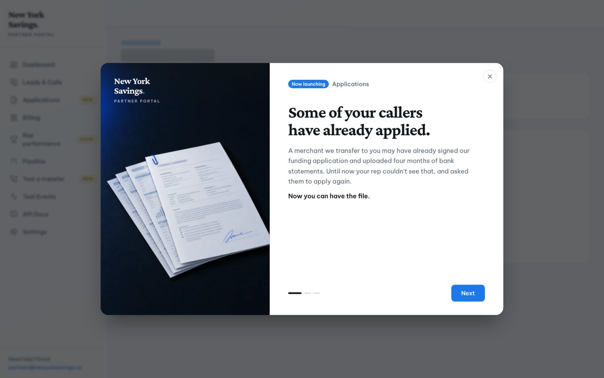

Web portal
Partner portal
A secure login area for the companies that buy leads and calls from the business. Each partner sees only their own account.
- Call log with recordings and full transcripts
- Billing view showing which calls were billable and why
- API documentation and keys for partners who integrate directly
- Admin tooling for onboarding and managing partner accounts
